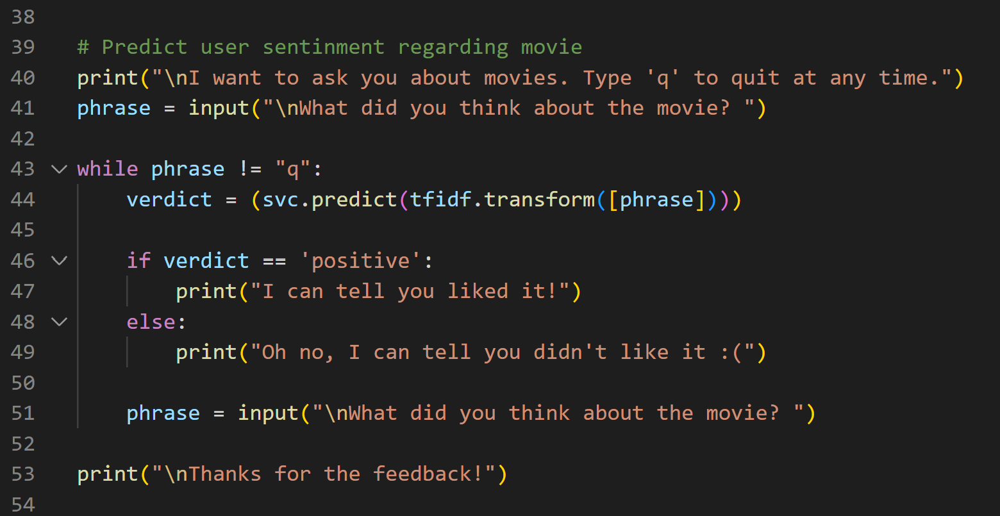
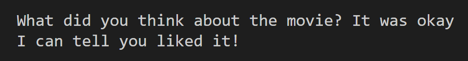

Movie Sentiment Analysis
Introduction
This python script uses natural language processing (NLP) and machine learning algorithms from scikit-learn to analyze a user's sentiment regarding a movie. The dataset is a collection of IMDB reviews from Kaggle.
It works by taking 1000 positive and 1000 negative movie reviews from the dataset to train and test
and begins to associate certain words with a positive or negative sentinment .
Example:
Positive sentinment words = "good", "great", "amazing", "best", "love"...
Negative sentinment words = "bad", "terrible", "hate", "awful", "trash"...
Using the predict function from scikit-learn, the script is able to determine if a user-entered movie review is positive or negative, and return a response to match.
Limitations
The dataset only had positive and negative reviews to train from, so the script is unable to recognize neutral sentinment. Interestingly, "okay" was assocaited with positive sentiment
while "ok" was associated with negative sentiment.
It also struggled to understand some slang that may have not been present in the dataset. Cuss words were very hit-or-miss, since the same one can have a different meaning depending on the context.
Credits
Research Materials
A simple Guide to Scikit-Learn by The PyCoach
Datasets
IMDB Dataset of 50K Movie Reviews by Lakshmipathi N
Full Code File: movieSentimentAnalysis